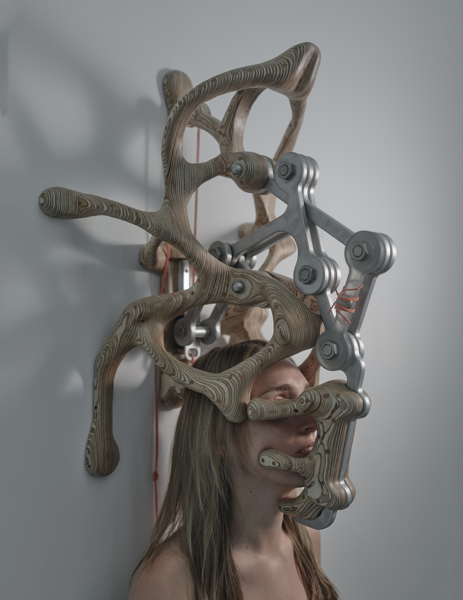
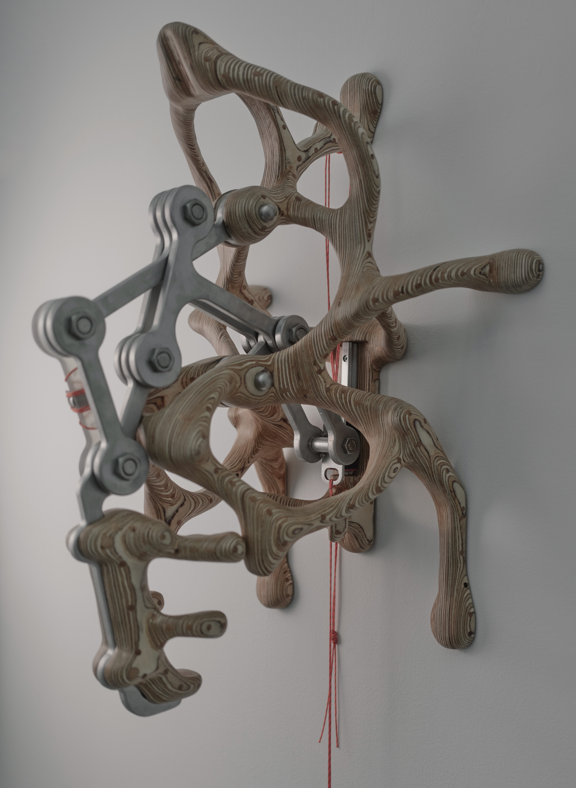
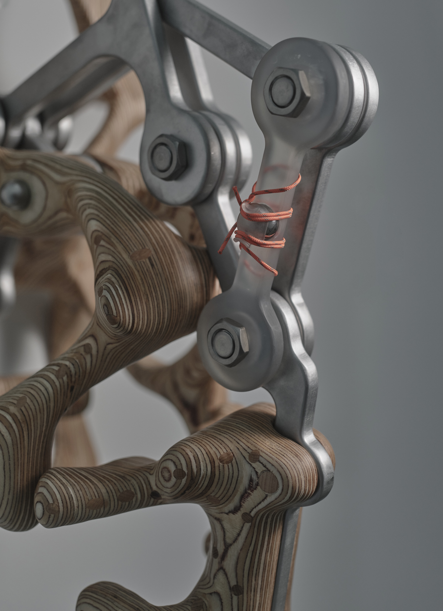
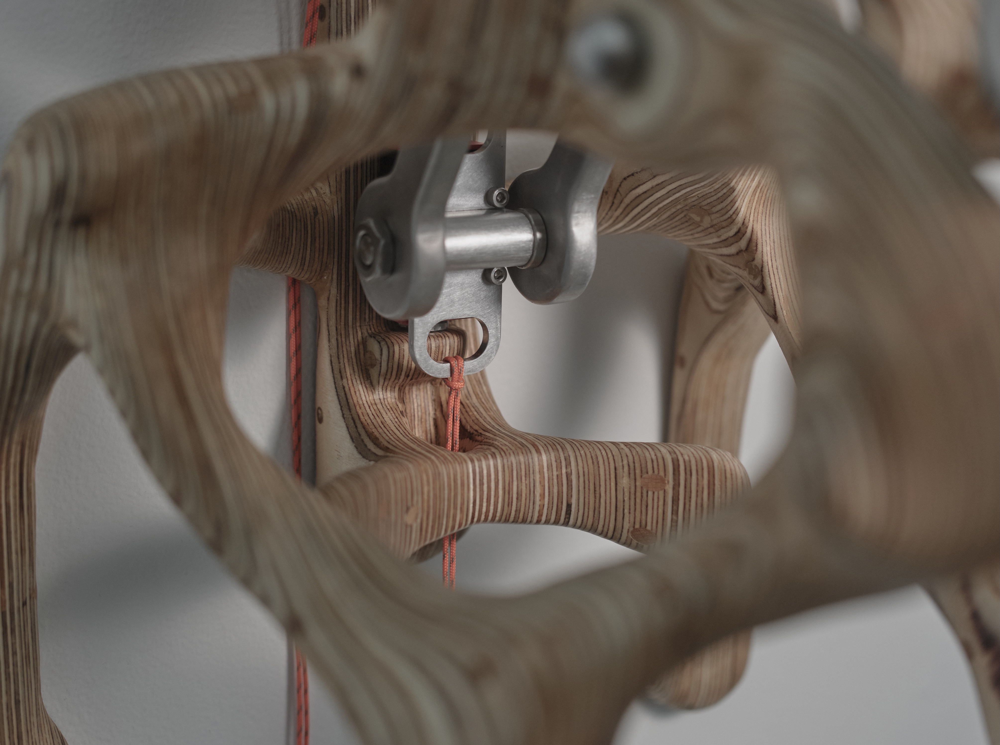
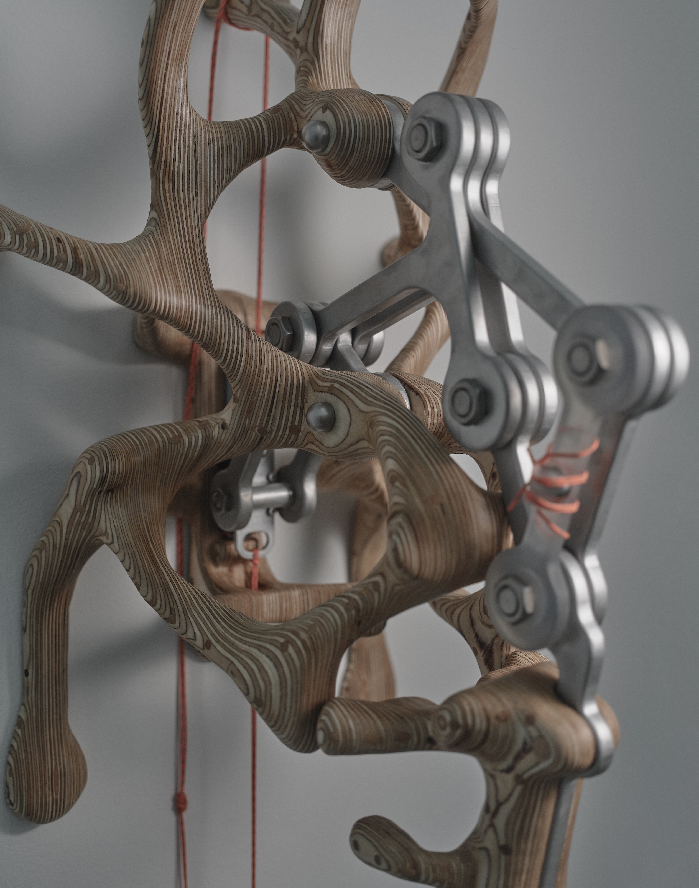
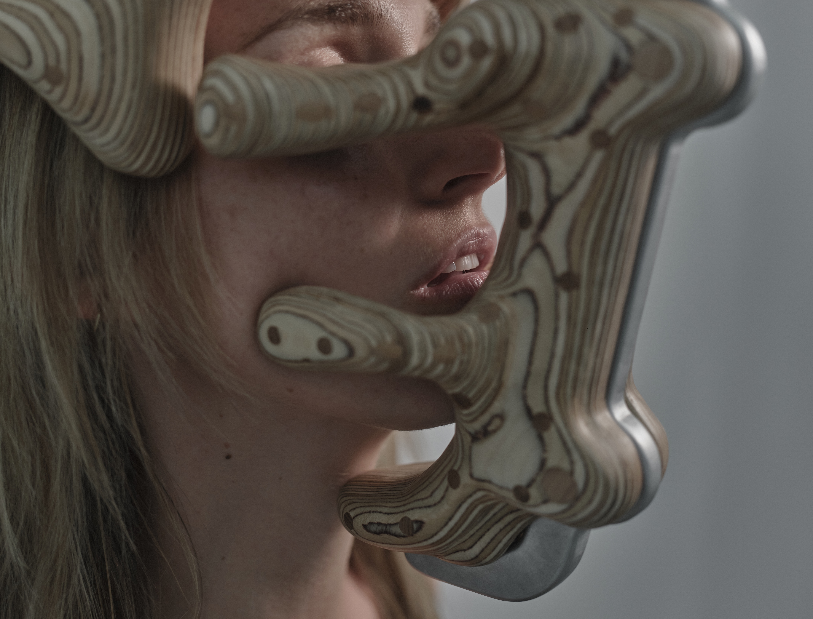
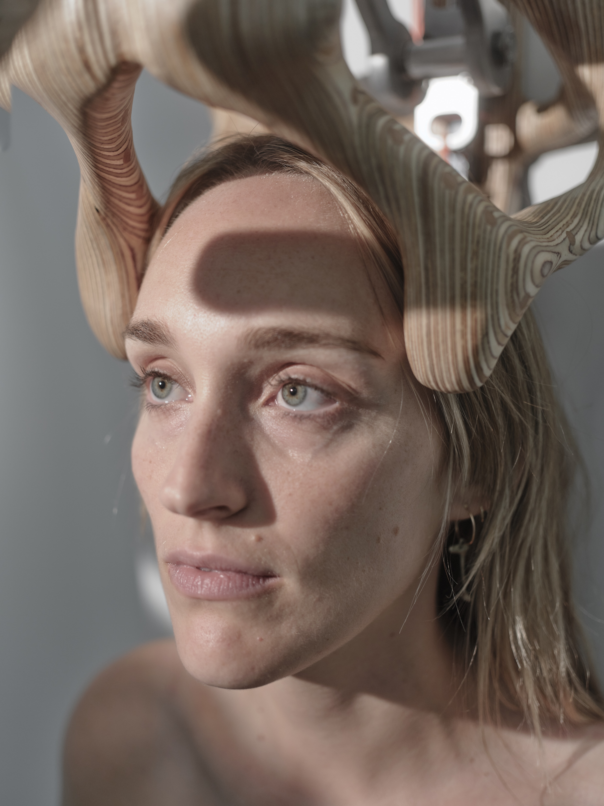

Opening - Closing Dates: 8 July 2025 - 25 July 2025
Model: Phoebe Jane Hart
Photography: Furkan Temir
replica 1a.gölk, is a mechanical instrument made primarily of wood, with elements
of aluminum, steel, and resin. It is modeled after a spiritual concentration device
once used by the ancient civilization of planet Kepler-452b.
It is believed that farmers began each day by engaging with this tool as part of a
ritual for spiritual attunement, awakening their senses to perceive the subtle presence
of underground foliage while harvesting. This practice transformed routine labor into a
form of sacred communion with the living systems beneath the soil.
Some records suggest that artists of the same civilization also used the device, possibly
to access altered states of perception or to align their creative impulses with planetary
rhythms.
In reactivating this speculative artifact, the work offers a new mythology, one that honors
lost forms of knowledge and reimagines the sacred within our technological present.







MYTHOLOGIES FOR A SPIRITUALLY VOID TIME is a group exhibition featuring
fifteen artists and performers forging new mythologies for our digital age.
The exhibition features artists alongside experimental practitioners working across animation,
dance, AI, sculpture, painting, and living biological material: Hawa Al-Najjar, Meriem Bennani,
Neal Cashman, Barış Çavuşoğlu, Will Freudenheim, X.S. Hou, Gabrielle Ledet, Solomon Leyba, Chris
Lloyd, Thomas Ludacer, Ezra Miller, muein, Injune Park, Ben Shirken, Ruby Justice Thelot, Yaloo,
and Damon Zucconi.